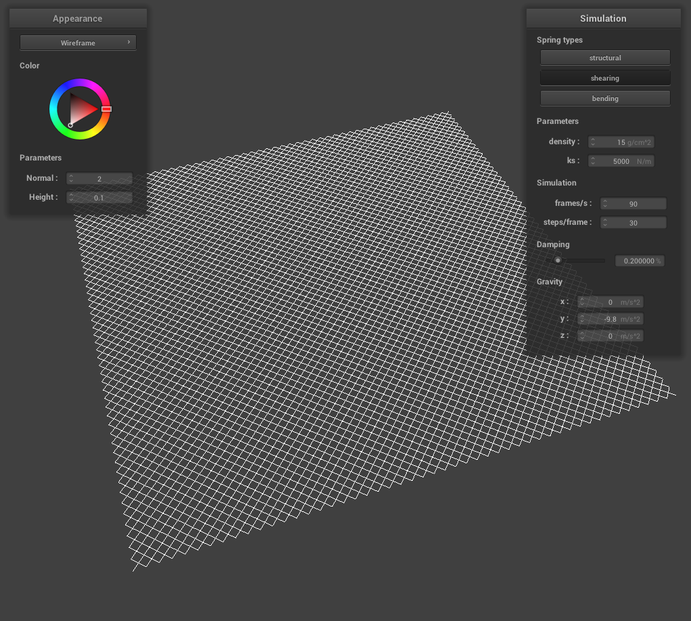
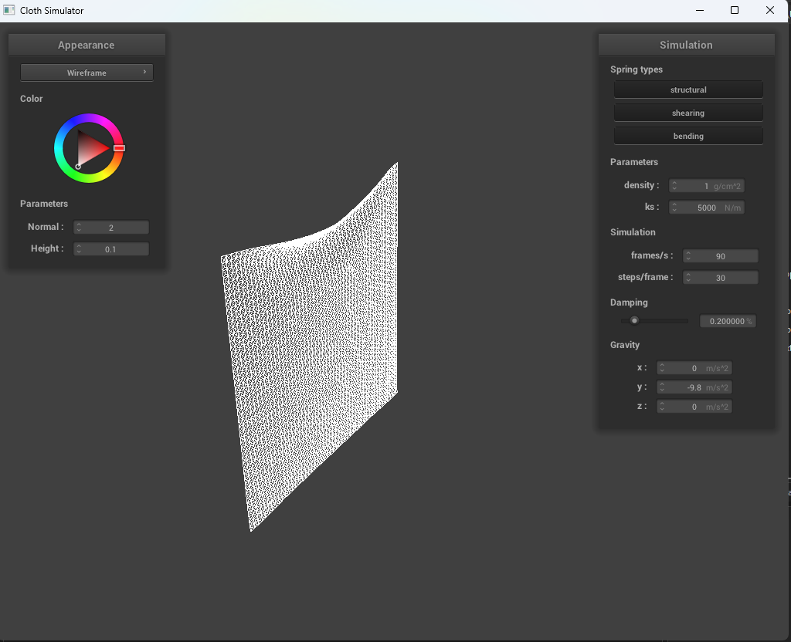
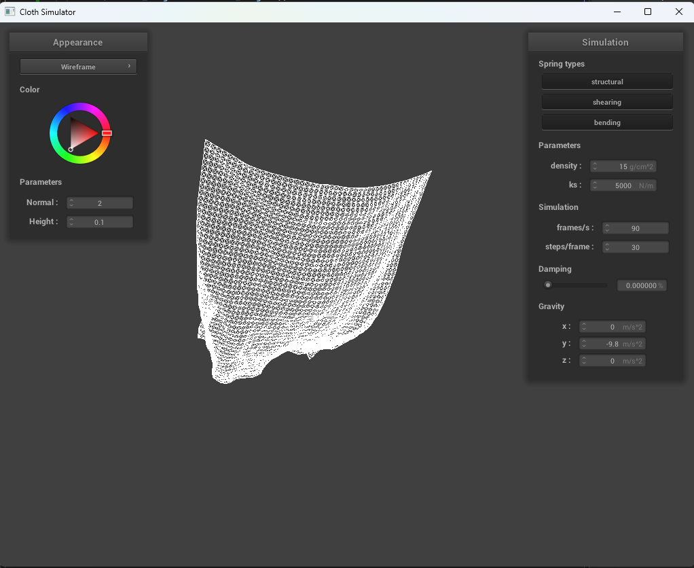
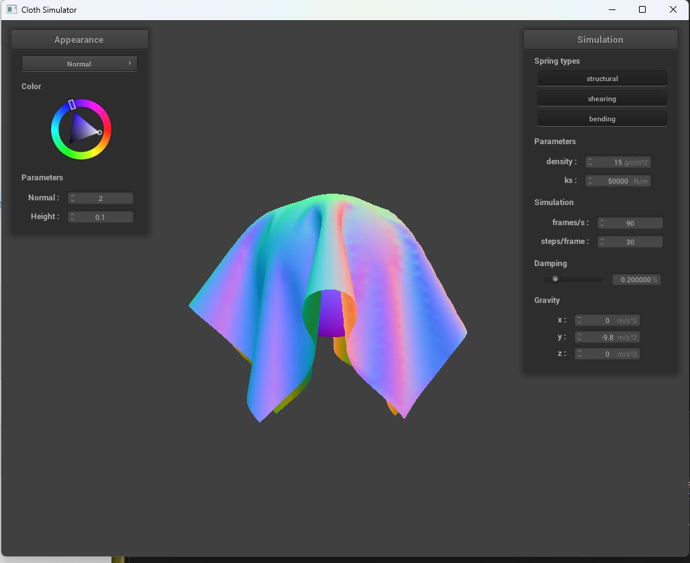
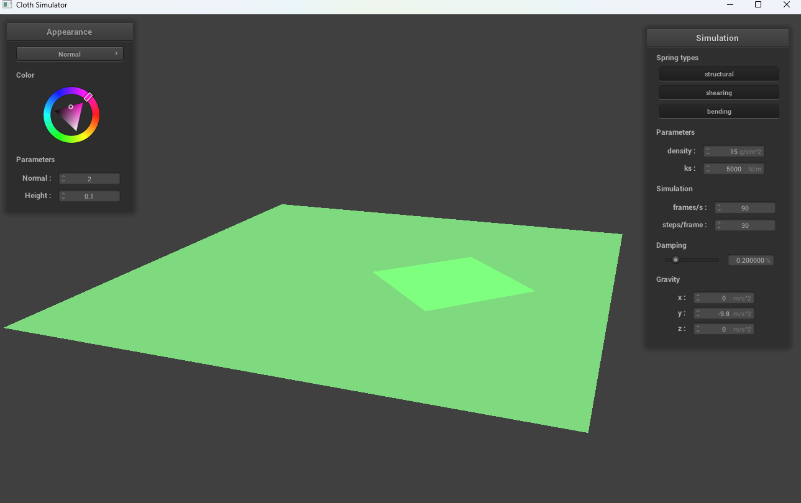
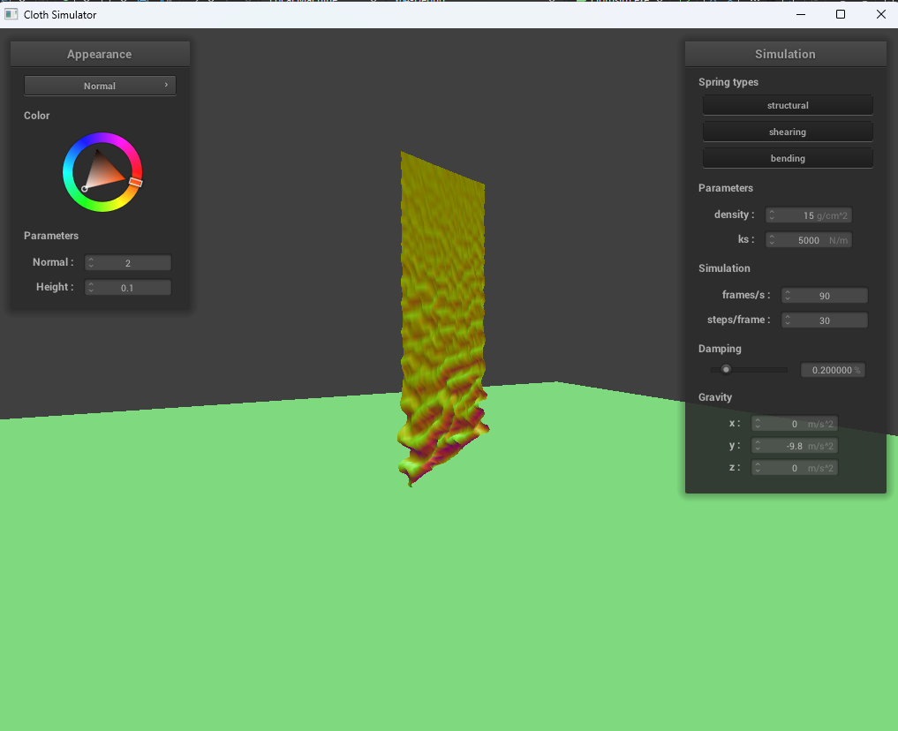
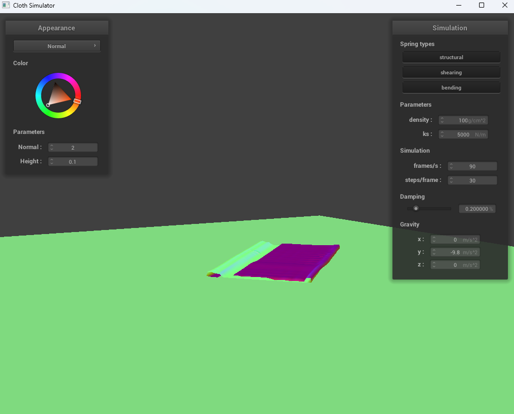
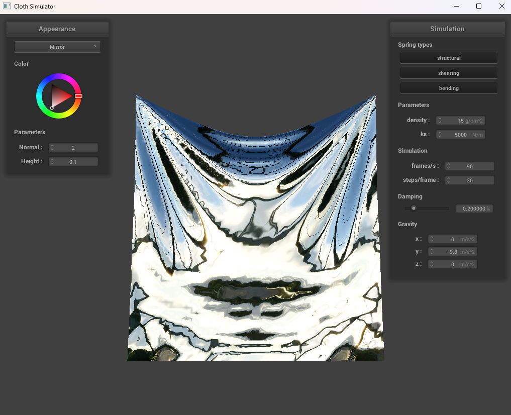

CS184/284A Fall 2026 Homework 4 Write-Up
Link to webpage: https://cal-cs184-student.github.io/hw4-clothsim-writeup/
Link to GitHub repository:https://github.com/cal-cs184-student/hw4-clothsim
Overview
Give a high-level overview of what you implemented in this homework. Think about what you've built as a whole. Share your thoughts on what interesting things you've learned from completing the homework.Part 1: Masses and springs
Implementation
I represented the cloth as a rectangular grid of point masses. The masses
are stored in row-major order, so the one-dimensional vector index of a
point at grid coordinate (x, y) is:
\[ \text{index} = y \cdot \text{num\_width\_points} + x. \]
For a horizontal cloth, I placed every point mass at a constant
y = 1 and distributed the points across the xz-plane. For a
vertical cloth, I distributed the points across the xy-plane and gave each
point a small random z-offset between -0.001 and 0.001. I also checked the
list of pinned grid coordinates and marked the matching point masses as
pinned.
After creating all point masses, I connected them with three types of springs:
- Structural springs connect immediate horizontal and vertical neighbors. They resist stretching along the cloth grid.
- Shearing springs connect diagonal neighbors. They resist diagonal deformation and help the grid retain its shape.
- Bending springs connect point masses that are two positions apart. They prevent the cloth from folding too sharply.
I created the springs after creating all point masses so that the spring pointers refer to valid point masses. I also checked the grid boundaries before creating each spring and connected only to selected previous neighbors to avoid creating duplicate springs.
Wireframe Results



Comparison
Without shearing constraints, the cloth contains mainly horizontal and vertical connections, allowing it to deform diagonally more easily. With only shearing constraints, the diagonal connections are visible, but immediate horizontal and vertical neighbors are not directly connected. With all constraints enabled, the cloth has the densest spring structure and receives resistance against stretching, shearing, and bending.
Part 2: Simulation via numerical integration
Implementation
I implemented the cloth simulation in three stages. First, I calculated the total force acting on every point mass. I reset each point's force at the beginning of every timestep and applied the external accelerations using Newton's second law, \(F=ma\). I then used Hooke's law to calculate the forces produced by each enabled spring:
\[ F_s = k_s\left(\|p_a-p_b\|-l\right). \]
The force was applied in opposite directions to the two endpoints of the spring. I used 20% of the normal spring constant for bending springs so that they would resist bending less strongly than structural and shearing springs.
I updated each unpinned point mass using Verlet integration:
\[ x_{t+\Delta t} = x_t+ (1-d)(x_t-x_{t-\Delta t})+ a_t\Delta t^2. \]
The difference between the current and previous positions approximates the point's velocity. The damping term reduces this movement over time. Pinned point masses are skipped so that they remain fixed.
Finally, I applied the Provot constraint. If a spring became longer than 110% of its rest length, I moved its endpoints toward each other. The correction was divided equally when both points could move, but was applied entirely to the unpinned point when the other endpoint was pinned.
Effect of Spring Constant

ks = 500.

ks = 50000.
With a low spring constant, the springs exert weaker restoring forces, so the cloth stretches and sags more before reaching rest. With a high spring constant, the springs resist changes in length more strongly, making the cloth appear stiffer and less elastic.
Effect of Density

density = 1.

density = 100.
Lower density gives each point mass less mass, allowing the spring forces to control the cloth more strongly. Higher density creates heavier point masses. Gravity therefore produces larger forces, while the same springs provide less acceleration relative to the mass, causing greater sagging and stretching.
Effect of Damping

damping = 0.

damping = 1.
With zero damping, very little motion energy is removed, so the cloth swings and oscillates for a long time. Increasing damping reduces the motion term during every timestep, causing the oscillations to disappear faster. Damping mainly changes how quickly the cloth reaches rest rather than its final resting shape.
Final Resting State

pinned4.json cloth in its final resting state using
the default simulation parameters: ks = 5000,
density = 15, and damping = 0.2.
Part 3: Handling collisions with other objects
Sphere Collision Implementation
To detect a sphere collision, I calculated the distance between each point mass and the center of the sphere. If this distance was less than or equal to the sphere's radius, the point was inside or intersecting the sphere.
I calculated the direction from the sphere's center toward the point mass and extended that direction to the sphere's radius. This produced the tangent point on the sphere's surface:
\[ p_{\text{tangent}} = p_{\text{center}} + r\frac{p-p_{\text{center}}} {\|p-p_{\text{center}}\|}. \]
I then calculated the correction from the point mass's previous position to
the tangent point. The correction was multiplied by
(1 - friction) before updating the point's position. This
places the point outside the sphere while reducing its sliding movement.
Plane Collision Implementation
For plane collisions, I used signed distances to determine which side of the plane contained the point mass's previous and current positions. If the signs differed, the point crossed the plane during the most recent timestep.
I intersected the point mass's movement segment with the plane to find the
tangent point. I then moved this point slightly toward the original side
of the plane using SURFACE_OFFSET. This small offset prevents
numerical error from placing the point directly inside the plane. As with
the sphere, I multiplied the correction by
(1 - friction) before updating the point's position.
During each simulation step, I tested every point mass against every collision object in the scene.
Sphere Results with Different Spring Constants

ks = 500.

ks = 5000.

ks = 50000.
With ks = 500, the springs are relatively weak, so the cloth
stretches more and conforms closely to the sphere. It hangs farther down
around the sphere and behaves like a soft, elastic material.
With the default ks = 5000, the cloth still drapes around the
sphere, but it retains more of its original dimensions. This produces a
balance between flexibility and resistance to stretching.
With ks = 50000, the spring forces are much stronger. The
cloth behaves more rigidly, stretches less, and preserves more of its
original grid shape while resting on the sphere.
Plane Collision Result

The cloth falls under gravity until its point masses cross the plane. The collision response moves those points back to the plane's surface. After the remaining motion is reduced by damping and friction, the cloth settles on the plane without passing through it.
Part 4: Handling self-collisions
Implementation
Without self-collision handling, different sections of the cloth can pass through each other. Comparing every pair of point masses would require quadratic time, so I used spatial hashing to reduce the number of collision checks.
I divided the three-dimensional scene into boxes. The dimensions of each box were:
\[ w=\frac{3\cdot\text{cloth width}}{\text{number of width points}}, \qquad h=\frac{3\cdot\text{cloth height}}{\text{number of height points}}, \qquad t=\max(w,h). \]
In hash_position, I divided a point's coordinates by these
dimensions and rounded downward to obtain its integer spatial-box
coordinates. I combined the three coordinates into a single hash value.
At the beginning of each timestep, build_spatial_map clears
the old map and places every point mass into the vector associated with
its spatial hash. This groups nearby points into the same spatial box.
In self_collide, I looked up the point masses sharing the
current point's spatial box. I ignored the point itself and checked whether
each candidate was closer than twice the cloth thickness:
\[ \|p_a-p_b\| < 2\cdot\text{thickness}. \]
For every collision, I calculated a correction in the direction away from the other point mass. I averaged all collision corrections and divided the result by the number of simulation steps before applying it. This reduces sudden position changes and allows the cloth to separate gradually.
Self-Collision Sequence



During the fall, spatial hashing allows nearby sections of cloth to repel one another instead of clipping through each other. The cloth may continue to move or slowly flatten after reaching the plane because the simplified self-collision response does not model every source of real-world energy loss.
Effect of Density

density = 1.

density = 100.
With low density, each point mass is light, so the spring forces have a relatively strong effect on the cloth's motion. The cloth retains more of its structure and responds quickly when sections collide.
With high density, each point has more mass. The same spring forces produce less acceleration relative to this mass, allowing the cloth to deform and compress more as it falls. This results in heavier-looking motion and deeper or more compact folds.
Effect of Spring Constant

ks = 500.

ks = 50000.
With ks = 500, the spring forces are weak. The cloth is soft,
stretches more, and forms tighter or more irregular folds when it lands on
itself.
With ks = 50000, the springs strongly resist changes in
length. The cloth behaves more rigidly, retains more of its original shape,
and tends to form broader folds instead of collapsing into a compact pile.
Part 5: Shaders
Shader Programs
A shader is a program that runs on the GPU to perform graphics calculations in parallel. Shaders allow us to render different materials and lighting effects efficiently without performing expensive ray tracing calculations.
The vertex shader processes individual vertices and transforms their positions into clip space. It also passes attributes such as world-space positions, normals, and texture coordinates to the next stage. These attributes are interpolated during rasterization.
The fragment shader uses the interpolated attributes to calculate the final color of each fragment. Together, the two shaders allow us to modify both the geometry and appearance of an object.
Diffuse Shading
I implemented diffuse shading by calculating the direction from the fragment toward the light source and taking its dot product with the surface normal. Surfaces facing the light receive more illumination, while surfaces facing away receive no direct diffuse illumination.
The light intensity also decreases with the squared distance from the light source.
Blinn-Phong Shading
The Blinn-Phong shading model combines three lighting components: ambient, diffuse, and specular illumination.
\[ L = L_a + L_d + L_s \]
- Ambient: Provides constant background illumination so that surfaces are not completely dark when facing away from the light.
- Diffuse: Depends on the angle between the surface normal and the light direction. It creates gradual variations in brightness across the surface.
- Specular: Produces shiny highlights based on the alignment between the surface normal and the halfway vector between the viewing and lighting directions.
I calculated the halfway vector as:
\[ \mathbf{h} = \frac{\mathbf{l}+\mathbf{v}} {\|\mathbf{l}+\mathbf{v}\|} \]
The complete lighting equation is:
\[ L = k_a I_a + k_d\frac{I}{r^2}\max(0,\mathbf{n}\cdot\mathbf{l}) + k_s\frac{I}{r^2}\max(0,\mathbf{n}\cdot\mathbf{h})^p \]
The exponent \(p\) controls the concentration of the specular highlight. A larger exponent produces a smaller and sharper highlight.


Ambient lighting provides uniform brightness, diffuse lighting reveals the curvature and orientation of the surface, and specular lighting creates concentrated highlights. Combining the three components produces a more realistic material appearance.
Texture Mapping
In the texture mapping shader, I used the interpolated UV
coordinates of each fragment to sample a two-dimensional
texture. I used the GLSL texture() function to
retrieve the corresponding color and assigned it to
out_color.
This allows an image to be mapped onto the cloth without modifying its geometry. As the cloth moves and folds, the texture follows the deformation of the surface.

Bump Mapping
Bump mapping creates the appearance of surface detail without changing the actual geometry of an object. I sampled neighboring height-map values to calculate how the height changes along the U and V texture directions.
Using the surface tangent and normal, I calculated the bitangent and constructed the tangent-bitangent-normal (TBN) matrix:
\[ \mathbf{b} = \mathbf{n}\times\mathbf{t} \]
\[ TBN = [\mathbf{t}\;\mathbf{b}\;\mathbf{n}] \]
I used the height differences to construct a perturbed tangent-space normal and transformed it into world space:
\[ \mathbf{n}' = \operatorname{normalize} \left(TBN \begin{bmatrix} -dU\\ -dV\\ 1 \end{bmatrix}\right) \]
I then used the modified normal in the Blinn-Phong lighting calculation. This changes how light interacts with the surface while leaving the vertex positions unchanged.


Displacement Mapping
Unlike bump mapping, displacement mapping modifies the geometry itself. In the vertex shader, I sampled the height map and displaced each vertex along its original surface normal:
\[ \mathbf{p}' = \mathbf{p}+\mathbf{n}\cdot h(u,v)\cdot k_h \]
Here, \(h(u,v)\) represents the sampled height and \(k_h\) controls the displacement magnitude. I also used the perturbed normals in the fragment shader to calculate lighting consistently with the surface detail.

Comparison of Bump and Displacement Mapping
Bump mapping changes only the surface normals, creating an illusion of depth through lighting. The overall shape and silhouette of the object remain unchanged.
Displacement mapping changes the actual vertex positions. Therefore, it can produce visible changes to the silhouette and geometry of the sphere. However, its effectiveness depends on the resolution of the mesh.
Effect of Sphere Mesh Resolution

-o 16 -a 16.

-o 16 -a 16.

-o 128 -a 128.

-o 128 -a 128.
With a coarse mesh of 16 by 16, displacement mapping has fewer vertices available to represent changes in height. Fine details may be lost, and the displaced geometry may appear more angular.
Increasing the mesh resolution to 128 by 128 provides more vertices that can be displaced independently. This allows the geometry to represent smaller height variations and more detailed surface features.
Bump mapping is less dependent on mesh resolution because its lighting calculations occur in the fragment shader. Increasing the mesh resolution can improve the underlying sphere geometry, but the texture-based surface details remain visible even on a relatively coarse mesh.
Environment-Mapped Reflections
I implemented mirror reflections using an environment cubemap. Instead of tracing reflected rays through the scene, I sampled the environment map to approximate the incoming radiance.
I first calculated the normalized direction from the fragment toward the camera:
\[ \mathbf{w}_o = \frac{\mathbf{p}_{camera}-\mathbf{p}} {\|\mathbf{p}_{camera}-\mathbf{p}\|} \]
I then reflected the negative viewing direction across
the surface normal using the GLSL reflect()
function:
\[ \mathbf{w}_i = 2(\mathbf{n}\cdot\mathbf{w}_o)\mathbf{n} -\mathbf{w}_o \]
Finally, I sampled u_texture_cubemap using
the reflected direction and assigned the sampled color
to the fragment.


The reflected environment changes depending on the viewing direction and surface orientation. The folds of the cloth produce varying reflections, while the curved sphere reflects different directions of the surrounding environment across its surface.
This technique efficiently approximates mirror reflections, but it does not account for reflections of other nearby objects because it samples a precomputed environment map rather than tracing rays through the scene.